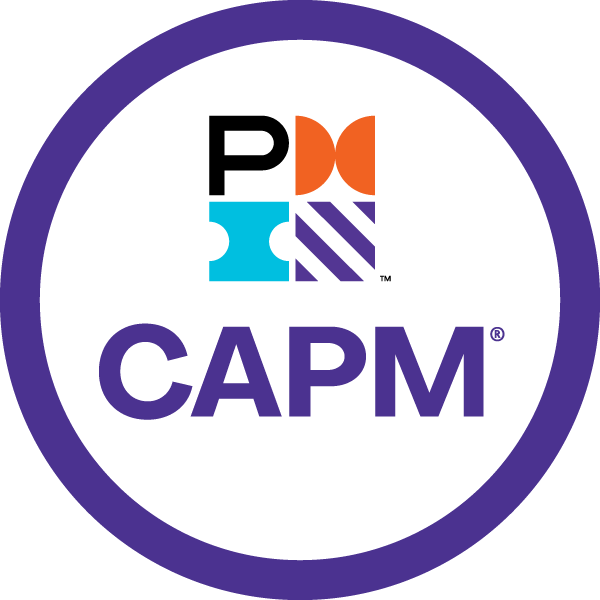

UX & Product Thinking
- User research & discovery
- User journeys & task flows
- Wireframes & information architecture
- Usability testing
- Accessibility / WCAG
- Design systems
Hi, I’m Pragathi Ilango
I’m a web designer/developer based in New Haven, CT, currently building digital experiences at Wesleyan University. With a background in Computer Science and a Master’s in Interaction Design from UT Dallas, my work balances technical depth with thoughtful design.
My not-so-secret superpower? I can code and bring my designs to life. The coder side of me keeps my ideas grounded — practical, scalable, and dev-friendly (you’re welcome, developers) — while the designer in me keeps asking how the experience could feel clearer, easier, or just better. Having lived in three countries and stumbled through more apps than I can count, I bring a global lens to the way I notice and solve problems.
I used to be the person thinking, “Ugh, they could’ve just done this better.” Now? I’m the person making it better. And if I’m not designing, chances are I’m teaching my dog a new trick, frantically writing down an idea before I forget it, or — let’s be honest — scrolling through social media (I’m working on that habit).
Current
Designing and developing accessible web experiences, maintaining large-scale content systems, and translating research-focused information into clear, usable interfaces.
Previous
Created front-end interfaces, visual systems, responsive pages, and implementation-ready design work across client projects.
Supported interaction-design coursework and evaluated student work across design, usability, and interface-development topics.


Off the clock... sort of.